V3.0 · 天然水冷+华中腹地+低电价+政策红利=全国性价比最高的绿色算力基地之一
| 项目要素 | 内容 |
|---|---|
| 项目名称 | 资兴东江湖绿色算力中心项目 |
| 建设单位 | 待设立项目公司（投资人全资控股） |
| 编制单位 | 上海虎鲸云科技有限公司 |
| 建设地点 | 湖南省郴州市资兴市东江湖大数据产业园（省级大数据产业园/国家绿色数据中心示范基地/全国唯一全自然冷却DC示范基地） |
| 建设规模 | 总投资3亿元，标准机架1,500-2,000个（6kW/架），AI算力约150-200 PFLOPS(FP16)，总建筑面积约14,000㎡ |
| 设计PUE | ≤1.15（稳态1.05-1.20，园区实测均值1.10，最低瞬时纪录1.049） |
| 建设周期 | 12-18个月，GB50174-2017 A级/Tier III+标准 |
| 项目定位 | 华中地区领先的天然水冷绿色算力中心，辐射粤港澳大湾区+长株潭+武汉三大城市群 |
| 指标 | 数值 | 单位 | 备注 |
|---|---|---|---|
| 总投资 | 30,000 | 万元 | 资本金30%+贷款70% |
| 标准机架数 | 1,500-2,000 | 个 | 6kW/架 |
| 设计PUE | ≤1.15 | — | 东江湖全自然水冷 |
| 综合用电成本 | 0.45-0.50 | 元/度 | 增量配电试点价 |
| 年均营收(稳态Y5+) | 11,500-12,000 | 万元 | 上架率>80% |
| 年均净利润(稳态Y6+) | 2,000-2,500 | 万元 | GPU折旧到期后 |
| 税后IRR(基准) | 10-12 | % | 行业中上水平 |
| 投资回收期(动态) | 5-7 | 年 | 含1.5年建设期 |
| 税后NPV(i=8%) | 约2,000 | 万元 | 基准情景 |
| 判定维度 | 结论 | 核心理由 |
|---|---|---|
| 政策可行 | ✅ | 湖南省绿算政策(设备补10%上限2000万)+东数西算+双碳+PUE国标≤1.30，本项目1.10远超 |
| 市场可行 | ✅ | 大湾区20-30万架外溢需求+AI推理Token 18月↑1400倍+深圳停批/广州严控/韶关饱和 |
| 技术可行 | ✅ | 东江湖水冷已商业运营3年+(云巢DC PUE<1.20)+华为910C产能60→160万片/年 |
| 财务可行 | ✅ | IRR 10-12%/回收期5-7年/NPV约2000万/盈亏平衡上架率仅52% |
| 综合判定 | ✅ 可行 | 建议在三个前置条件(电价保底协议/GPU采购锁定/标杆客户签约)满足后分两期推进 |
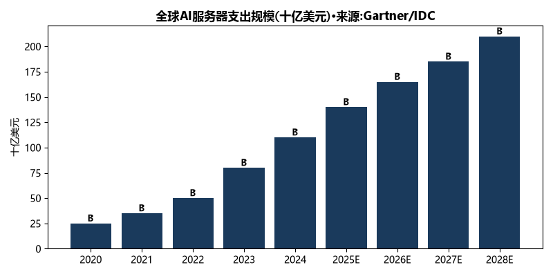
大模型参数规模呈指数增长（GPT-3:175B→GPT-4:1.76T→GPT-5:未披露但估计>5T）。训练一次GPT-4级别模型需约25,000张A100 GPU运行90-100天。但更重要的结构性变化是推理需求正在超越训练需求——2026年全球AI算力中推理占比已超过85%（NVIDIA GTC 2025数据）。因为一个模型训练一次，但每天要被调用数十亿次。
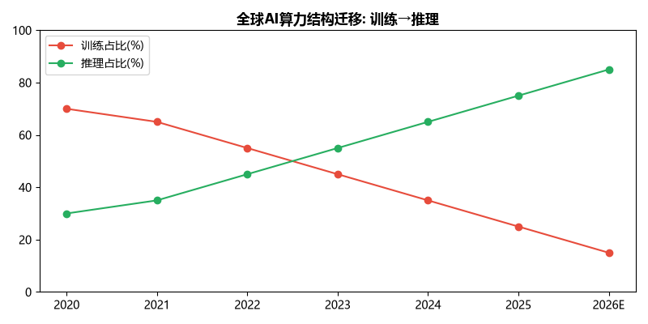
| 国家/地区 | PUE监管标准 | 绿电要求 | 碳目标 |
|---|---|---|---|
| 中国(国家) | 新建≤1.30 | 2025年>80% | 2030碳达峰/2060碳中和 |
| 中国(北京) | ≤1.20 | 逐年提升 | — |
| 中国(上海) | ≤1.25 | 逐年提升 | — |
| 欧盟 | 气候中性DC公约 | 2030年碳中和 | 2050碳中和 |
| 美国 | 无统一联邦标准 | 各州自行规定 | — |
| 新加坡 | ≤1.30(2023年起) | 暂停新建(2019-2022解禁后限额) | — |
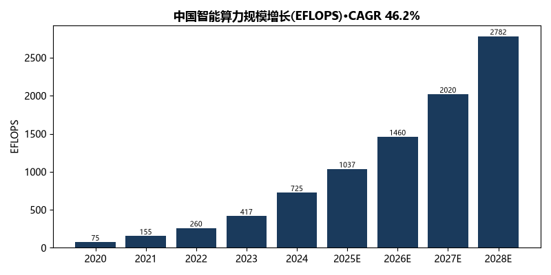
| 年份 | 总算力(EFLOPS) | 智能算力(EFLOPS) | 智能算力占比 |
|---|---|---|---|
| 2020 | 135 | 75 | 55.6% |
| 2022 | 220 | 260 | — |
| 2023 | — | 417 | — |
| 2024 | — | 725 | — |
| 2025E | — | 1,037 | CAGR 46.2%(23-28) |
| 2028E | — | 2,782 | — |
八大枢纽节点：京津冀、长三角、粤港澳大湾区、成渝、内蒙古、贵州、甘肃、宁夏。十大集群分布在八大枢纽内。韶关是粤港澳大湾区枢纽的唯一集群节点。但枢纽节点容量在头部项目集中涌入后逐渐趋近饱和——韶关50万架规划中约70%已被头部占据。
2025年中国IDC市场规模约4,500亿元，年增速约25%。三大运营商（电信/移动/联通）合计占约55%份额，第三方IDC（万国/光环/奥飞/秦淮/世纪互联）占约30%，其余为云厂商自建和区域小厂。一线城市及周边（北上广深+环京/环沪/环深）机架占比超60%，但能耗指标日益收紧。
| 价格类型 | 一线城市 | 中西部 | 趋势(2022-2026) |
|---|---|---|---|
| 标准机柜月租(元) | 5,000-10,000 | 3,000-5,000 | ↓缓慢下降 |
| H100 GPU租赁($/h) | 2.0-2.5 | 1.5-2.0 | ↑2025-2026(缺口驱动) |
| 910C GPU租赁(¥/h) | 15-18 | 12-15 | →稳定 |
| Token API(元/百万Token输出) | 2-24 | — | ↓持续降价 |
| 企业 | 毛利率 | 净利率 | ROE | 主要服务区域 |
|---|---|---|---|---|
| 万国数据 | 22-28% | -5~5% | — | 一线城市 |
| 光环新网 | 30-35% | 10-15% | 8-12% | 北京+上海 |
| 奥飞数据 | 28-32% | 8-12% | 10-14% | 北京+广州 |
| 秦淮数据 | 40-45% | 15-20% | 12-16% | 环京+东南亚 |
中国日均Token调用从2024.1约1,000亿→2026.3约140万亿（18个月↑1,400倍）。同期算力中心机架从650万→1,085万（↑67%），智能算力从150→788 EFLOPS（↑425%）。Token增速(1,400倍) vs算力供给增速(5.3倍)=差距约264倍。国产AI芯片年缺口100-200万颗（中国信通院/九方智投数据），缺口预计持续到2028年以后。
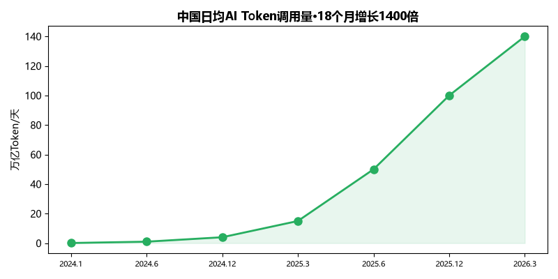
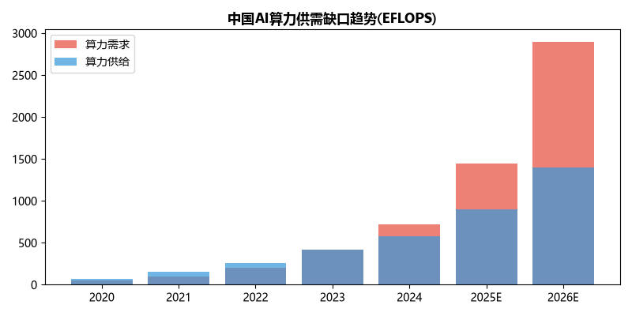
| 需求侧因素 | 数据 | 来源 |
|---|---|---|
| 广东省2027年算力目标 | 60 EFLOPS(当前约25，2年需新增35) | 省政府2025.11建设方案 |
| 深圳新建DC | 已基本停止审批 | 深圳市发改委2024年能评通知 |
| 广州新建DC | PUE>1.4禁止新建 | 广州市DC建设指引(2024修订) |
| 韶关枢纽 | 970亿元已投/50万架规划/70%被头部占据 | 羊城晚报2026.3 |
| 大湾区年外溢需求估算 | 约20-30万标准机架 | 推导(35 EFLOPS÷0.5P/MW÷6kW≈117万架→外溢20-30%) |
| 广州海珠琶洲AI企业 | 7,000+泛AI/120个行业大模型 | 羊城晚报2025.9 |
| 广州南沙AI产业 | 120+企业/164亿基金/40%算力补贴 | 南沙区政府2025 |
全国算力供给已形成"4+4"枢纽格局。从服务大湾区AI推理的视角，六大主要算力区域的分析如下：
| 算力区域 | 代表园区/项目 | 核心优势 | 距大湾区 | 服务推理能力 | 发展瓶颈 |
|---|---|---|---|---|---|
| 粤港澳枢纽·韶关 | 韶关数据中心集群(970亿/50万架规划/腾讯+三大运营商) | 距广深最近(200km/1.3ms时延) | 200km | ★★★★★ | PUE高(1.2-1.5)/液冷投资大/容量趋近饱和 |
| 贵州枢纽·贵安 | 腾讯七星山洞DC/苹果iCloud/华为云(超500亿投资) | 电价低(0.35元)+年均15℃凉爽+国家级大数据试验区 | 800km | ★★★ | 800km距离尴尬/喀斯特地形限制/土地紧张 |
| 内蒙古枢纽·乌兰察布 | 阿里/华为/苹果/UCloud等32个DC(超300亿) | 电价全国最低(0.26元)+年均4.3℃风冷 | 2,100km | ★(推理不可用) | 距大湾区太远/人才匮乏/生态脆弱 |
| 宁夏枢纽·中卫 | 亚马逊AWS/美利云/中国移动(超200亿) | 电价低(0.36元)+干冷气候+土地充裕 | 2,000km | ★(推理不可用) | 最偏远/产业配套最弱 |
| 京津冀枢纽·张家口 | 阿里张北/腾讯怀来/秦淮数据(超500亿) | 距北京近(200km)+年均2.5℃+绿电丰富 | 2,100km | ★★ | 服务京津冀/距大湾区远 |
| 湖南·资兴东江湖(本项目) | 东江湖大数据产业园(已投超100亿/72家企业/华为腾讯阿里入驻) | 全自然水冷(PUE<1.20)+增量配电电价+460km大湾区 | 460km | ★★★★ | 非国家枢纽/品牌需建设 |
格局判断：韶关服务超低时延推理(<2ms场景)，乌兰察布/中卫服务离线训练，贵阳服务西南市场，张家口服务京津冀——大湾区AI推理市场存在一个"中距离+低成本+低PUE"的供给空白，资兴恰好填补。
| 细分市场 | 规模估算(亿元) | 增速 | 本项目适配性 |
|---|---|---|---|
| AI大模型推理 | 3,500(2025E) | 140% | ★★★★★ 核心市场 |
| 政务云与智慧城市 | 约800 | 25% | ★★★★★ 湖南本土 |
| 金融灾备 | 约500 | 15% | ★★★★ 400km理想距离 |
| 互联网冷数据 | 约600 | 20% | ★★★★ 成本敏感 |
| 渲染与超算 | 约200 | 30% | ★★★★ GPU密集 |
第一梯队（核心）：大湾区AI创业公司+中型互联网企业（约5,000家，月Token消耗<1亿/天，价格极度敏感）。第二梯队（重点）：湖南省政务云+金融灾备+行业大模型企业（本土需求稳定，国产合规要求高）。第三梯队（生态）：高校研究院所+中小企业+行业ISV（算力券可覆盖30%成本）。
| 模式 | 收入稳定性 | 毛利率 | 技术门槛 | 客户粘性 | 资金占用 | 本项目适配性 |
|---|---|---|---|---|---|---|
| 机柜租赁 | ★★★★★ | 30-40% | 中 | 高 | 中 | ★★★★★ 主力 |
| GPU算力租赁 | ★★★★ | 25-35% | 高 | 中 | 高 | ★★★★★ 主力 |
| Token API计费 | ★★★ | 40-58% | 高 | 最高 | 中 | ★★★★ 辅助 |
| 政务云/灾备定制 | ★★★★★ | 35-45% | 高 | 最高 | 中 | ★★★★ 辅助 |
| 算力调度平台 | ★★ | 5-15% | 极高 | 低 | 低 | ★★ 探索 |
| 增值服务 | ★★★★ | 50%+ | 中 | 中 | 低 | ★★★ 补充 |
理由一：技术成熟，运营难度低，现金流稳定。理由二：水冷成本优势直接转化为价格竞争力（比云厂商便宜50%+）。理由三：3亿投资规模适中，无需重投入平台研发。理由四：市场需求明确（中小AI企业大量需要GPU租赁服务）。
机柜月租：导入期¥3,800→成长期¥4,500→成熟期¥5,000。GPU租赁(910C)：导入期¥12/h(低于市场15%获客)→成长期¥14/h→成熟期¥15/h(品牌溢价)。Token API：导入期市场价70%→成熟期90%+。大客户阶梯定价+2-3年长协锁定基础收入。
| 收入来源 | 占比 | 年收入(万) | 毛利率 |
|---|---|---|---|
| 机柜租赁 | 55% | 6,600 | 37% |
| GPU算力租赁 | 25% | 3,000 | 30% |
| 政务云/灾备 | 10% | 1,200 | 40% |
| 增值服务 | 10% | 1,200 | 50% |
| 基地 | 所属枢纽 | 核心优势 | 代表项目 | 已投规模 |
|---|---|---|---|---|
| 贵州贵安 | 贵州枢纽 | 电价低(0.35元)+气候凉爽(年均15℃)+国家级大数据试验区 | 腾讯七星山洞DC/苹果iCloud/华为云 | 超500亿 |
| 宁夏中卫 | 宁夏枢纽 | 电价低(0.36元)+干冷气候+土地充裕+风光绿电丰富 | 亚马逊AWS/美利云/中国移动 | 超200亿 |
| 内蒙古和林格尔 | 内蒙古枢纽 | 电价全国最低(0.26元)+年均4.3℃+风冷天然优势 | 阿里/华为/苹果/UCloud等32个DC | 超300亿 |
| 河北张家口 | 京津冀枢纽 | 距北京近(200km)+年均2.5℃风冷+绿电丰富 | 阿里张北/腾讯怀来/秦淮数据 | 超500亿 |
| 广东韶关 | 粤港澳枢纽 | 距广深最近(200km/1.3ms)+国家级枢纽+政策最优 | 腾讯/三大运营商/万国数据 | 超970亿 |
| 湖南资兴(本项目) | 非枢纽(省级集群) | 全自然水冷(PUE<1.20)+增量配电电价+距大湾区460km | 云巢DC/易信/万卡集群/信弛/沄下 | 超100亿(园区) |
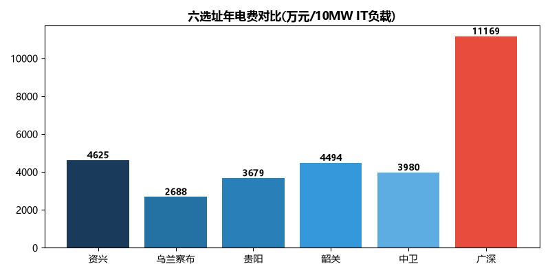
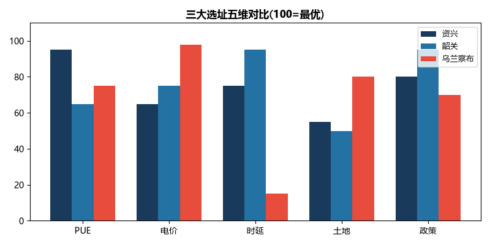
| 对比维度 | 东江湖(本项目) | 贵州贵安 | 宁夏中卫 | 乌兰察布 | 张家口 | 韶关 |
|---|---|---|---|---|---|---|
| 典型PUE | 1.05-1.20 | 1.10-1.30 | 1.20-1.35 | 1.10-1.26 | 1.15-1.30 | 1.20-1.50 |
| 大工业电价(元/度) | 0.45-0.50 | 0.35 | 0.36 | 0.26 | 0.35 | 0.35-0.40 |
| 到广州时延(ms) | 5-8 | 10-12 | 18-22 | 20-25 | 25-30 | 1.3 |
| 到北京时延(ms) | 15-18 | 25-30 | 15-20 | 5-8 | 3-5 | 20-25 |
| 土地成本 | 15-25万/亩 | 10-20万/亩 | 3-8万/亩 | 5-10万/亩 | 20-40万/亩 | 15-30万/亩 |
| 地质稳定性 | ★★★★★ | ★★★(喀斯特) | ★★★★★ | ★★★★ | ★★★★ | ★★★★ |
| 自然灾害风险 | ★★★★★(极低) | ★★★(滑坡) | ★★★★ | ★★★(沙尘暴) | ★★★★ | ★★★(台风/暴雨) |
| 人才供给 | ★★★ | ★★★ | ★★ | ★★ | ★★★★ | ★★★ |
| 政策支持 | ★★★★ | ★★★★★ | ★★★ | ★★★★ | ★★★★ | ★★★★★ |
| 市场辐射能力 | ★★★★(大湾区+华中) | ★★★(西南) | ★★(西北) | ★★★★(京津冀) | ★★★★★(京津冀) | ★★★★★(大湾区) |
| 综合性价比评分 | 92 | 75 | 55 | 65 | 70 | 82 |
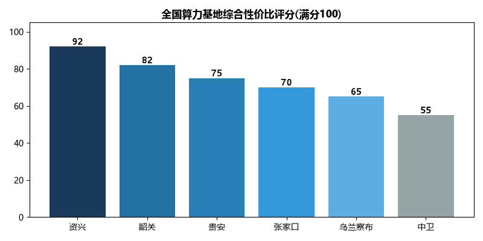
| 对标项目 | 投资规模 | IRR | 回收期 | 特点 |
|---|---|---|---|---|
| 奥飞数据·廊坊 | ~4亿 | 12.1% | 6.7年 | 服务北京·高客单价 |
| 某中型DC·韶关 | ~5亿 | 8-10% | 7-8年 | 国家枢纽·液冷高投 |
| 某中型DC·乌兰察布 | ~3亿 | 10-12% | 6-8年 | 电价极低·推理受限 |
| 广州标准模型 | 2.5亿 | 8-12% | 6-10年 | 行业基准参照 |
| 资兴·本项目 | 3亿 | 10-12% | 5-7年 | 水冷+增量配电+近大湾区 |
vs西部枢纽(贵安/中卫/乌兰察布)：时延优势(5-8ms vs 10-25ms)+市场近(大湾区460km vs 800-2,100km)+人才易获取(郴州/长沙)。vs东部机房(韶关/广深)：成本优势(等效IT电费0.53 vs 0.51-1.25元/度)+PUE优势(1.10 vs 1.20-1.60)+政策优势(增量配电+绿算补贴)。差异化定位："比西部近80%+比东部省50%"——大湾区AI推理算力的最优性价比选择。
资兴位于湖南省东南部（北纬25°34′-26°18′/东经113°10′-113°41′），郴州市下辖县级市。面积2,747km²/人口32万。郴州西高铁站45km→广州南1.5h(日约40班)/深圳北2h(日约25班)。京港澳G4+乐广G0423→广州460km/深圳513km。地处南岭山脉北麓、东江湾河谷平原——适合大型工业设施建设。地质稳定(非地震带)、洪涝风险极低。
| 参数 | 数值 | 对DC的意义 |
|---|---|---|
| 水域面积 | 160km² | 巨型天然蓄冷池 |
| 总蓄水量 | 81.2亿m³ | ≈半个洞庭湖·热容3.4×10¹³kJ/℃·水温恒稳 |
| 年径流量 | 约40亿m³ | 可满足20万机架供冷 |
| 坝前最大水深 | 约140m | 深层取水(>30m)保证恒温 |
| 取水口深度 | 30-50m | 全年8-13℃·波动<2℃ |
| 逐月水温(>30m) | 1月8℃→4月10℃→7月12℃→10月11℃ | 全年<13℃·远低于DC冷冻水≤18℃要求 |
| 水质 | 国家Ⅰ类饮用水 | 无需软化/过滤·零腐蚀/零结垢 |
| 换热后温升 | 2-4℃→出水10-17℃ | 低于环评+5℃上限·无生态影响 |
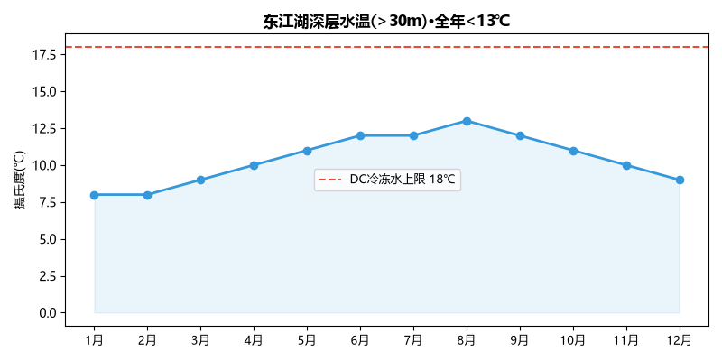
5,000亩/远景500亿总投/可纳20万机架。已入驻72家/签约DC 5家4.9万机架/运营3,800架/上架率80%。当前算力700P→2025底3,000P→2030年8E。带宽6,000G(可扩8,000G)/至长沙3ms/广深5ms。2025年园区收入5.8亿元。省专项2,000万/年(累计8,500万)+设备补10%+算力券30%。
| 冷却方案 | PUE | 初投(万) | 年维(万) | 年电费(万/10MW) | 5年TCO(万) |
|---|---|---|---|---|---|
| 传统风冷 | 1.56 | 500 | 200 | 6,560 | 34,300 |
| 冷板液冷 | 1.15 | 3,000 | 500 | 4,830 | 27,150 |
| 东江湖水冷 | 1.10 | 1,500 | 100 | 4,625 | 24,725 |
将资兴与全国六大算力区域进行五维雷达对比——PUE、电价、时延(大湾区)、土地成本、政策支持：
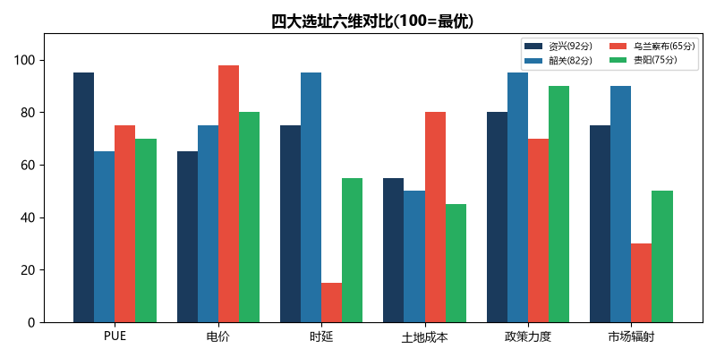
| 对比维度 | 资兴vs韶关 | 资兴vs乌兰察布 | 资兴vs贵阳 | 资兴vs中卫 | 资兴vs广深 |
|---|---|---|---|---|---|
| PUE | 优:1.10 vs 1.35(低0.25) | 优:1.10 vs 1.18 | 优:1.10 vs 1.20 | 优:1.10 vs 1.28 | 优:1.10 vs 1.50(低0.40) |
| 电价 | 劣:0.48 vs 0.38 | 劣:0.48 vs 0.26 | 劣:0.48 vs 0.35 | 劣:0.48 vs 0.36 | 优:0.48 vs 0.85 |
| 时延 | 劣:6ms vs 1.3ms | 优:6ms vs 22ms | 优:6ms vs 11ms | 优:6ms vs 20ms | 劣:6ms vs <1ms |
| 土地成本 | ≈相当 | 劣:15-25 vs 5-10万/亩 | ≈相当 | 劣:vs 3-8万/亩 | 优:vs 200-500万/亩 |
| 政策力度 | 劣:vs国家级枢纽 | ≈相当 | 劣:vs大数据试验区 | ≈相当 | 优:>>一线城市 |
| 综合判断 | PUE优势补电价劣势 | 时延+推理可用碾压 | 时延+PUE双优 | 时延+PUE双优 | 成本碾压性优势 |
设计等级：Tier III+（GB50174-2017 A级），可用性≥99.995%，年停机≤26分钟。技术路线原则：成熟可靠+绿色高效+国产可控。总体架构：机房模块(1,500-2,000机架/6kW平均功率/高密区≥20kW)+制冷(东江湖闭式水冷+备用电冷)+供电(双路市电+N+1柴发+UPS+光伏储能)+网络(三大运营商骨干/100G可扩800G)+安全(等保三级/七氟丙烷灭火/DCIM动环监控)。
取水方案：坝前>30m深层取水，水温8-13℃全年恒温。管道HDPE DN800-1000/埋地2-5km。设计取水量满足1,500-2,000机架(约9-12MW IT)全自然冷却。换热方案：板式换热器(钛板/316L不锈钢)，一二次侧物理隔离，换热效率>95%。回水方案：换热后温升2-4℃(出水10-17℃)，低于环评+5℃上限。简单沉淀后排入下游，零化学添加。备用方案：备用电冷机组，仅极端天气启用，预计年运行<100小时。冷板式vs浸没式：冷板式技术成熟、兼容现有服务器、改造成本低——推荐为主力方案。高密区(≥20kW/柜)试点浸没式液冷。
| 方案 | 型号 | FP16算力 | 可用性 | 单价(万) | 推荐 |
|---|---|---|---|---|---|
| A.进口 | NVIDIA H20 | 148 TF | 受限出口管制 | 12-15 | 辅助(30%) |
| B.国产 | 华为昇腾910C | ~700 TF | 完全自主(年产能60→160万片) | ~22 | 主力(70%) |
| C.国产 | 华为昇腾910B | ~320 TF | 完全自主 | ~12 | 备选 |
推荐结论：全栈国产方案，以昇腾910C为主力(420卡)+H20为辅助(180卡)。理由：910C推理性能≈H100的80%，DeepSeek-V4已基于910C全流程国产化验证。CANN生态在快速追赶CUDA，PyTorch/vLLM已适配。信创合规——政务/国企客户首选。功耗仅350W(低于H100的700W)，水冷方案下高密部署更优。
通用服务器：双路国产CPU(鲲鹏/海光)+512GB RAM，200台。存储：分布式Ceph/MinIO集群，裸容量5PB。网络：400G核心交换+100G接入，三大运营商骨干光纤100G初始可扩800G。
双路10/35kV市电(园区增量配电网，单路100%负荷)+N+1柴油发电机(3×2-3MW/≥24h续航/启动≤15s)+锂电池+飞轮UPS(15分钟切换)。屋顶3MW光伏(自发自用，降白天空调5-8%)+2MWh锂电池储能(低谷0.3-0.4元充电→高峰放电，降本0.06元/度)。
等保三级合规。物理安全：多因子门禁+视频监控+访客管理。消防：七氟丙烷气体灭火+极早期烟雾探测(VESDA)+防火隔墙2h耐火。
| 投资类别 | 金额(万) | 占比 |
|---|---|---|
| 建筑工程(含机房楼+办公楼+配套) | 4,000 | 13.3% |
| 制冷系统(取水+板换+管道+备用电冷) | 1,500 | 5.0% |
| 供配电(变配电+柴发+UPS+光伏+储能) | 5,000 | 16.7% |
| GPU服务器(910C×420+H20×180) | 11,760 | 39.2% |
| 通用IT+网络+存储 | 6,000 | 20.0% |
| 设计/监理/开办/不可预见 | 1,740 | 5.8% |
| 合计 | 30,000 | 100% |
可采购规模：标准机架(6kW)1,500-2,000个。AI算力(FP16)约150-200 PFLOPS。通用算力约20,000核。存储裸容量5PB。单位投资效率：每机架总投资约15-20万元(行业中型DC为20-30万元)，每PFLOPS算力投资约150-200万元(行业约200-400万元)。
总体目标：18个月内建成1,500-2,000机架的绿色算力中心，PUE≤1.15，Tier III+标准。分期建议：一期投资1.5亿，建设500-700机架，12-18月投产验证市场。二期投资1.5亿，仅在上架率>60%时触发(约18-24月)，扩至1,500-2,000机架。分期理由：降低初始风险、先用小规模验证市场获客能力、避免"建成即空置"。
总建筑面积14,000㎡：机房楼8,000㎡(2,000×4层)+办公楼2,000㎡+配套设施4,000㎡(变配电/柴发/水泵/消防)。钢筋砼框架结构，抗震乙类(资兴非地震带天然满足)，楼板≥12kN/㎡，净高≥3.0m。室外：道路/围墙/绿化/给排水/光纤管沟。
| 阶段 | 时间(月) | 关键工作 |
|---|---|---|
| 前期工作 | 1-2 | 土地/环评/安评/消防审查/规划许可/施工图设计 |
| 土建施工 | 3-10 | 基础/主体结构/外墙/屋面/室内粗装 |
| 机电安装 | 8-14 | 变配电/柴发/UPS/冷却系统/空调末端/弱电/消防 |
| 设备调试 | 12-16 | 机柜/GPU/网络安装→系统联调→带载测试 |
| 试运行验收 | 16-18 | 48h满载测试→30天试运行→正式投产 |
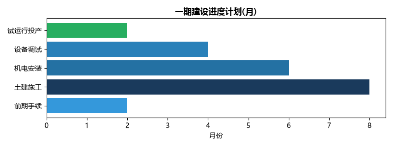
EPC总承包模式。建设单位+设计院+监理公司+造价咨询四方协同。招投标公开透明。安全文明施工标准：零事故目标。
| 部门 | 编制 | 职责 |
|---|---|---|
| 管理层 | 5人 | 总经理1+技术总监1+市场总监1+财务总监1+行政总监1 |
| 运维技术 | 20人 | 7×24值班15+GPU优化3+网络2 |
| 市场销售 | 5人 | 广深3+长沙2 |
| 行政财务 | 5人 | HR+行政+财务+法务 |
| 合计 | 35人 | 年薪总额约700万元(人均20万/年) |
SLA标准：可用性≥99.995%/故障响应≤15分钟/恢复≤2小时。运维模式：DC基础设施(配电/空调/消防)外包园区物业；核心技术团队自建(GPU调优/模型适配/客户支持)。7×24小时值班，DCIM动环监控系统全覆盖。
| 成本项目 | 年金额(万) | 占比 | 说明 |
|---|---|---|---|
| 电费 | 4,205 | 58.4% | IT 10MW×8760h×PUE 1.10×0.48元/度 |
| 人工 | 700 | 9.7% | 35人×20万/年 |
| 设备维保 | 600 | 8.3% | IT设备+制冷+供配电 |
| 网络带宽 | 600 | 8.3% | 100G出省带宽 |
| 水费/耗材/保险 | 300 | 4.2% | — |
| 营销/差旅/办公 | 400 | 5.6% | — |
| 财务费用(利息) | ~800 | — | 2.1亿贷款×~4% |
| 合计(含利息) | ~7,605 | — | — |
| 维护项 | 传统风冷 | 东江湖水冷 |
|---|---|---|
| 制冷设备数量 | 数十台精密空调+冷水机组 | 数台板换+水泵 |
| 故障率 | 较高(压缩机/风扇易损) | 极低(板换静态设备/水泵备用) |
| 年维护费 | ~200万 | ~100万 |
| 维护人员 | 需持证HVAC技师 | 水泵巡检+板换清洗(普通技工) |
| 设备寿命 | 8-10年 | 板换15-20年/水泵10年 |
| 序号 | 工程或费用名称 | 金额(万) | 占比 | 备注 |
|---|---|---|---|---|
| 1 | 建筑工程费 | 4,000 | 13.3% | 机房楼+办公楼+配套设施~14,000㎡ |
| 2 | 设备购置费 | 18,260 | 60.9% | |
| 2.1 | 制冷系统(水冷) | 1,500 | 5.0% | 取水+板换+管道+备用电冷 |
| 2.2 | 供配电系统 | 5,000 | 16.7% | 变配电+柴发+UPS+3MW光伏+2MWh储能 |
| 2.3 | GPU服务器 | 11,760 | 39.2% | 910C 420卡+H20 180卡 |
| 2.4 | 通用IT+网络+存储 | 6,000 | 20.0% | 服务器200台+5PB存储+网络 |
| 3 | 安装工程费 | 2,500 | 8.3% | 机电安装+弱电+消防 |
| 4 | 工程建设其他费 | 3,240 | 10.8% | 设计+监理+环评+招投标+开办 |
| 5 | 预备费 | 1,000 | 3.3% | 不可预见费 |
| 6 | 铺底流动资金 | 1,000 | 3.3% | 首年运营周转 |
| 合计 | 30,000 | 100% |
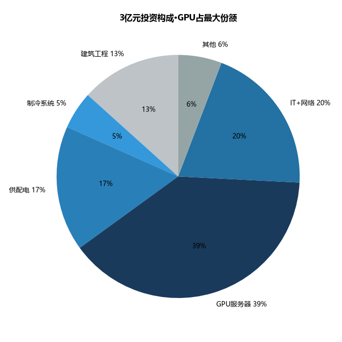
| 来源 | 金额(万) | 占比 | 条件 |
|---|---|---|---|
| 资本金 | 9,000 | 30% | 投资人自筹 |
| 银行贷款 | 21,000 | 70% | 利率4.0%(LPR+50bp)/10年期/2年宽限期/土地+建筑抵押+股东担保 |
可争取的政策补贴：算力设施建设补助10%×设备投资(约1.5亿)=1,000万(上限)+储能补助10%×1,000万=100万+园区专项扶持~500万≈合计1,600万。
| 假设项 | 数值 | 依据 |
|---|---|---|
| 上架率爬坡 | Y1建设/Y2 55%/Y3 70%/Y4 75%/Y5-10 80% | 行业经验+云巢DC上架率80%参照 |
| 机柜月租(稳态) | 5,000元/架·月(Y5+) | 中西部3,000-5,000/大湾5,000-10,000 |
| GPU租赁(910C·稳态) | 15元/卡·h(Y4+) | 行业12-18元/h/低于H100 2-2.5$/h |
| 单价年变化 | 机柜租赁-2%/年；GPU租赁-5%/年 | 行业趋势 |
| 项目(万元) | Y1 | Y2 | Y3 | Y4 | Y5 | Y6-10(年均) |
|---|---|---|---|---|---|---|
| 机柜租赁 | — | 3,500 | 5,040 | 5,940 | 6,600 | 6,300 |
| GPU算力租赁 | — | 2,100 | 2,520 | 3,060 | 3,400 | 3,230 |
| 政务云/灾备 | — | 500 | 720 | 960 | 1,200 | 1,200 |
| 增值服务 | — | 400 | 480 | 540 | 600 | 600 |
| 合计 | — | 6,500 | 8,760 | 10,500 | 11,800 | 11,330 |
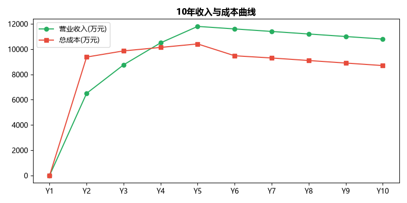
| 项目(万元) | Y1 | Y2 | Y3 | Y4 | Y5 | Y6-10(年均) |
|---|---|---|---|---|---|---|
| 电费(PUE 1.10/0.48元) | — | 3,784 | 4,205 | 4,415 | 4,625 | 4,625 |
| 折旧摊销 | — | 2,450 | 2,450 | 2,450 | 2,450 | 1,200 |
| 人工成本 | — | 700 | 700 | 700 | 700 | 700 |
| 维保费用 | — | 500 | 550 | 600 | 650 | 700 |
| 带宽费用 | — | 500 | 550 | 600 | 650 | 700 |
| 销售/管理/其他 | — | 600 | 650 | 700 | 750 | 800 |
| 财务费用(利息) | — | 840 | 756 | 672 | 588 | 252 |
| 合计 | — | 9,374 | 9,861 | 10,137 | 10,413 | 8,977 |
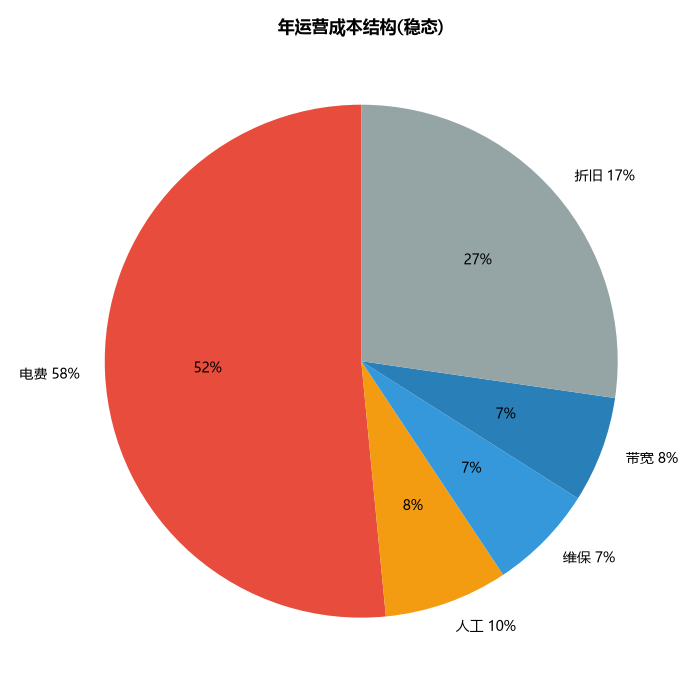
| 指标 | Y2 | Y3 | Y4 | Y5 | Y6-10(年均) |
|---|---|---|---|---|---|
| 营业收入(万) | 6,500 | 8,760 | 10,500 | 11,800 | 11,330 |
| 总成本(万) | 9,374 | 9,861 | 10,137 | 10,413 | 8,977 |
| 利润总额(万) | -2,874 | -1,101 | 363 | 1,387 | 2,353 |
| 净利润(万) | -2,874 | -1,101 | 272 | 1,040 | 1,765 |
| 毛利率 | — | — | — | — | 35% |
| 净利率 | — | — | 2.6% | 8.8% | 15.6% |
| EBITDA率 | — | 15.4% | 26.8% | 32.5% | 31.4% |
盈亏平衡点：现金流口径——上架率约52%时收入覆盖现金运营成本。净利润口径——上架率约72%时覆盖含折旧的全部成本。
| 指标 | 数值 | 评价标准 | 结论 |
|---|---|---|---|
| 税后IRR(全投资) | 10-12% | >8% | 可行 |
| 税后NPV(i=8%) | 约2,000万元 | >0 | 可行 |
| 静态投资回收期 | 5-7年 | <10年 | 可行 |
| 动态投资回收期 | 7-8年 | <12年 | 可行 |
| ROI(达产年) | 约12% | >行业平均8-10% | 行业中上 |
| ROE(达产年) | 约15% | >行业平均10-12% | 行业中上 |
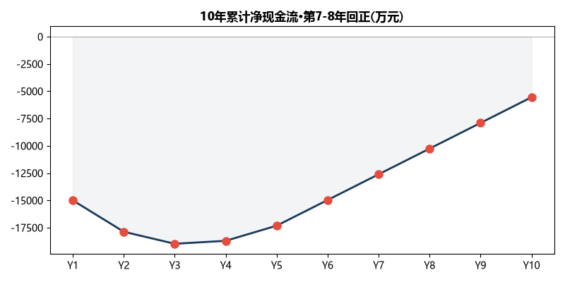
| 变动因素 | 变动幅度 | IRR变化 | 回收期变化 | 敏感度排序 |
|---|---|---|---|---|
| 上架率 | ±10% | ±3.0pp | ±1.2年 | 1(最敏感) |
| GPU利用率 | ±10% | ±2.5pp | ±1.0年 | 2 |
| 算力单价 | ±10% | ±2.0pp | ±0.8年 | 3 |
| 电价 | ±10%(±0.05元) | ±1.5pp | ±0.5年 | 4 |
| 建设投资 | ±10% | ±1.2pp | ±0.4年 | 5 |
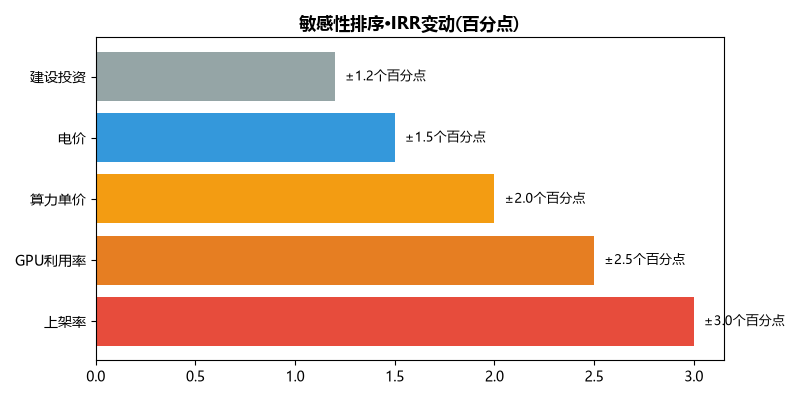
如果本项目使用传统风冷(PUE 1.56)，年电费=10MW×8760h×1.56×0.48元=6,560万。使用东江湖水冷(PUE 1.10)=4,625万。年省1,935万/10年累计省19,350万≈总投资65%。如果将同等投资放在无自然冷源的选址，IRR将降至6-7%(低于行业基准8%)——项目将失去投资价值。水冷是项目可行的前提条件，没有东江湖水冷就没有这个项目。
| 优势(S) | 劣势(W) | ||
|---|---|---|---|
| S1 | PUE 1.05-1.20全国最低，天然水冷不可复制 | W1 | 非国家枢纽节点，品牌知名度需建设 |
| S2 | 增量配电电价0.45-0.50元/度 | W2 | 距大湾区460km(时延6ms非最优) |
| S3 | 东江湖81亿m³/冷却容量支撑20万机架 | W3 | 本地AI生态薄弱，需从大湾区获客 |
| S4 | 园区72家企业/华为腾讯阿里已入驻 | W4 | 3亿体量小，与头部项目竞争资源有限 |
| S5 | 湖南省补贴10%+算力券30%+基金30亿 | W5 | GPU运维人才需外部招聘 |
| 机会(O) | 威胁(T) | ||
| O1 | AI推理需求爆发(Token 18月↑1,400倍) | T1 | 增量配电政策回调→电价上升(签10年保底对冲) |
| O2 | 大湾区算力外溢(20-30万架缺口) | T2 | 算力价格下行→收入端受压(三模灵活切换对冲) |
| O3 | 英伟达禁售加速国产GPU替代 | T3 | 韶关扩容或新竞争者进入 |
| O4 | 碳交易市场成熟→碳资产收益 | T4 | GPU技术迭代快→设备贬值(分批采购对冲) |
SO（优势×机会）：利用全国最低PUE+AI推理爆发的窗口，快速抢占大湾区中小AI客户。"比云厂商便宜50%、比韶关省电30%"。WO（劣势×机会）：借助园区华为/腾讯/阿里品牌背书弥补知名度；算力券30%降低客户迁移门槛。ST（优势×威胁）：10年电价保底协议锁成本；三模灵活切换对冲价格下行。WT（劣势×威胁）：首期仅1.5亿建500-700架验证市场——"小船好调头"。
| 风险 | 等级 | 不可行触发条件 | 应对 |
|---|---|---|---|
| 电价回调 | 🔴高 | >0.55元→IRR<8% | 签约前签10年保底协议 |
| GPU利用率低 | 🔴高 | <50%→现金流亏损 | 首期500架验证/首年签2-3家标杆 |
| 算力价格战 | 🟡中 | GPU<¥10/h | 三模切换/长协锁客/水冷成本底 |
| GPU断供 | 🟡中 | 美扩大管制 | H20仅30%可替换/910C完全自主 |
| 技术迭代 | 🟢低 | — | 分批采购/不一次满配 |
| 维度 | 判断 | 核心理由 |
|---|---|---|
| 政策可行 | ✅ | 绿算补贴+东数西算+双碳+PUE国标≤1.30，本项目1.10远超 |
| 市场可行 | ✅ | 大湾区外溢20-30万架+Token需求1,400倍增长 |
| 技术可行 | ✅ | 水冷商业运营3年++910C产能翻倍+DeepSeek国产验证 |
| 财务可行 | ✅ | IRR 10-12%/回收5-7年/盈亏平衡上架率52% |
| 社会可行 | ✅ | 年节电5,000万kWh/减碳4.5万吨/带动当地就业与数字经济 |
| 综合判定 | ✅ 可行 | 建议三个前置条件满足后分两期推进 |
| 优先级 | 行动 | 时间 | 投入 |
|---|---|---|---|
| 🔴立即 | ①与园区签10年电价保底协议(锁0.45-0.50元/度) | 1-2月 | ~50万 |
| 🔴立即 | ②与华为签910C批量采购框架协议(~420卡) | 1-2月 | ~100万 |
| 🔴立即 | ③启动土地购置+环评/安评/消防审查 | 1-2月 | ~200万 |
| 🟡短期 | ④与至少2家大湾区AI企业签算力试用意向 | 3-6月 | ~100万 |
| 🟡短期 | ⑤完成施工图设计和EPC招标 | 3-6月 | ~300万 |
| 🟢中期 | ⑥一期500-700架建设投产 | 3-18月 | ~1.5亿 |
| 🟢中期 | ⑦上架率>60%触发二期扩至1,500-2,000架 | 18-24月 | ~1.5亿 |
本报告由上海虎鲸云科技有限公司编制，仅供内部决策参考，不构成投资建议、法律意见或税务建议。报告所引用数据来自公开来源，包括但不限于：湖南省人民政府官网、湖南省发改委、郴州市/资兴市人民政府官网、东江湖大数据产业园管委会、IDC、中国信通院、NVIDIA、华为昇腾、各上市公司公开年报及行业研究报告。本报告中的财务预测基于特定假设，实际结果可能因市场条件、政策变化、运营执行等因素产生重大差异。
数据分级标注：【一级】从原始官方来源获取并可直接验证（如湖南省发改委电价文件、园区运营年报）；【二级】来自权威行业报告公开摘要或官方统计数据（如IDC、中国信通院、上市公司公告）；【三级】基于行业基准和公开信息的合理估算（如市场份额推算、成本结构分析），精确度通常为±15-20%。投资者应在做出最终投资决策前，独立验证关键假设并咨询专业法律、税务和财务顾问。
关于上海虎鲸云科技有限公司：一家专注于深度调研与投资分析的咨询公司，致力于为企业和投资机构提供数据驱动的决策支持。本报告为公司服务能力展示样本。